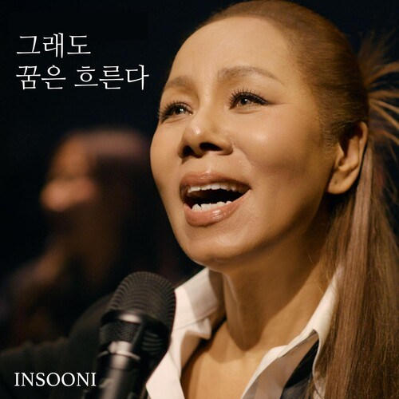

음악
반세기 가까운 무대의 기록. 앨범과 대표곡, 그리고 다시 봐도 벅찬 무대 영상들.

앨범과 음악 이야기
전체 디스코그래피 1978-2025
팬과 함께 만드는 기록
추억의 티켓·사진 공유
오래된 콘서트 티켓, 현장에서 찍은 사진, 간직해 온 기념품까지, 팬 여러분의 소장품이 곧 인순이의 역사입니다. 사랑방에 올려주시면 검수 후 아카이브에 정식 수록됩니다.
사랑방에서 공유하기반세기 가까운 무대의 기록. 앨범과 대표곡, 그리고 다시 봐도 벅찬 무대 영상들.

오래된 콘서트 티켓, 현장에서 찍은 사진, 간직해 온 기념품까지, 팬 여러분의 소장품이 곧 인순이의 역사입니다. 사랑방에 올려주시면 검수 후 아카이브에 정식 수록됩니다.
사랑방에서 공유하기